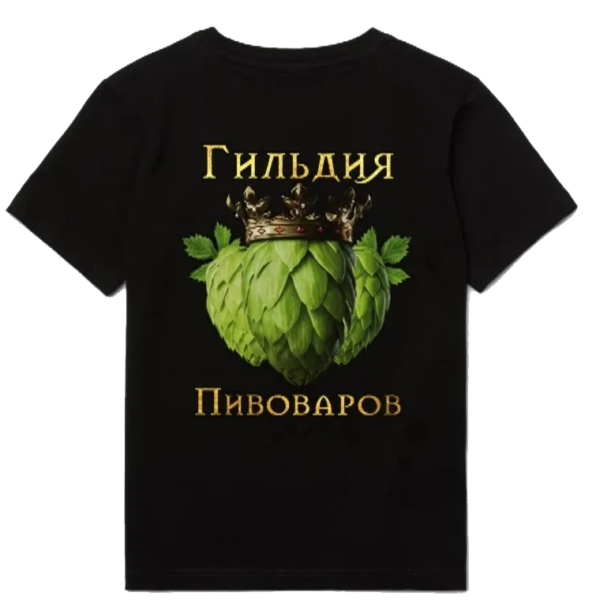
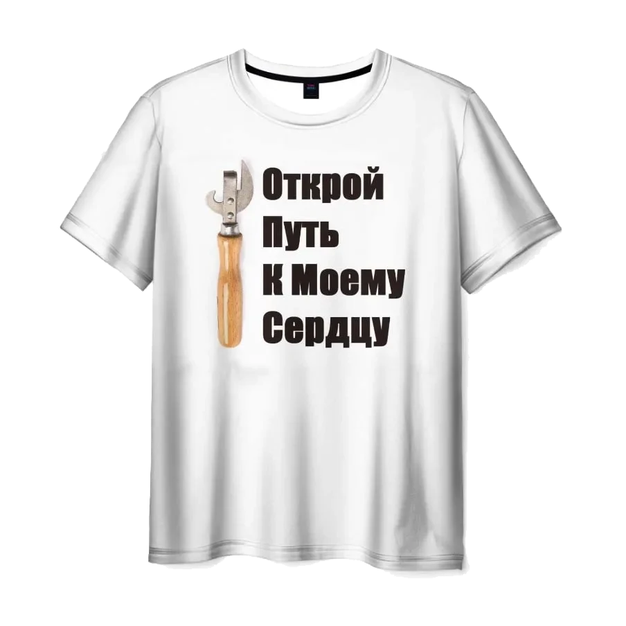
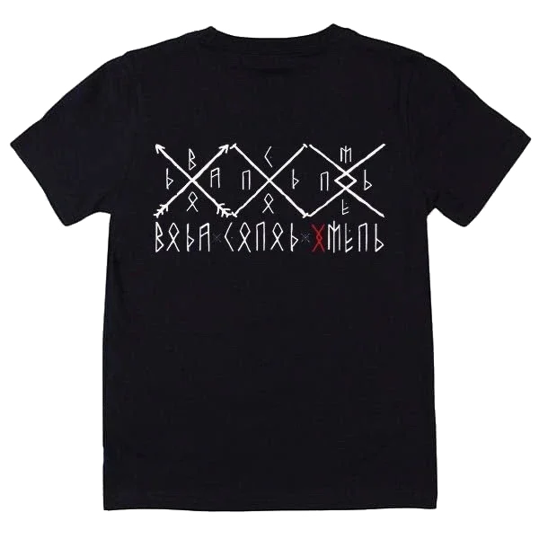
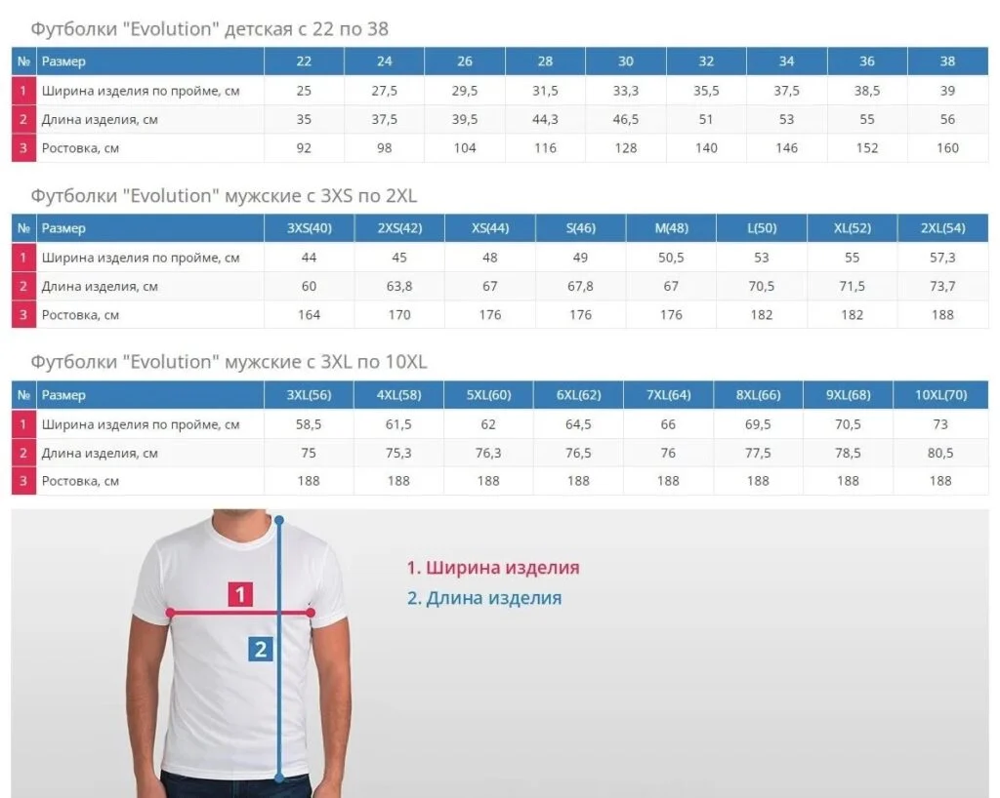

ФУТБОЛКА / ГИЛЬДИЯ ПИВОВАРОВ
Гильдия пивоваров
1 700 ₽

ФУТБОЛКА / ГИЛЬДИЯ ПИВОВАРОВ
Путь к сердцу
1 700 ₽

ФУТБОЛКА / ГИЛЬДИЯ ПИВОВАРОВ
Вода Солод Хмель
1 700 ₽
Таблица размеров +

ГИЛЬДИЯ ПИВОВАРОВ / МЕРЧ
Футболки от Гильдии пивоваров. Для тех, кто любит хмель, солод и сам процесс.

ФУТБОЛКА / ГИЛЬДИЯ ПИВОВАРОВ

ФУТБОЛКА / ГИЛЬДИЯ ПИВОВАРОВ

ФУТБОЛКА / ГИЛЬДИЯ ПИВОВАРОВ

КОНТАКТЫ
Поможем выбрать набор, обсудим индивидуальный рецепт
и ответим на вопросы о домашнем пивоварении.
Или заходите в сообщество